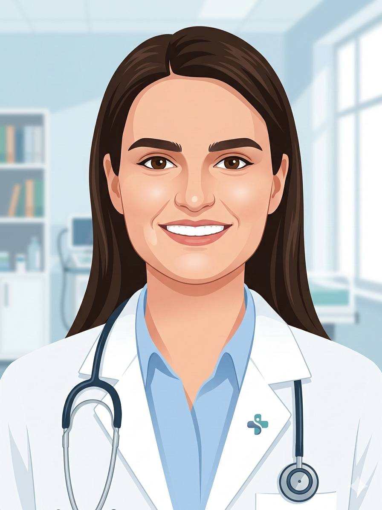

Sosyal medya tavsiyeleri değil, hakemli dergiler. Aktif hasta gören bir dermatoloji uzmanı tarafından hazırlanmış, bilimsel kaynaklara dayalı, tamamen ücretsiz rehberler.
İnternette cilt bakımı bilgisi çok — ama güvenilir olan az. İşte bizi ayıran şey:
Her içerik hakemli dergi makalelerine ve uluslararası klinik kılavuzlara dayanıyor. Sosyal medya trendleri değil; gerçek bilim.
İçerikler, aktif olarak hasta gören bir dermatoloji uzmanı tarafından hazırlanıyor ve güncelleniyor. Yapay zeka değil, gerçek klinik deneyim.
Reklam yok, sponsorlu içerik yok, ücretli üyelik yok. Doğru bilginin herkes için erişilebilir olması gerektiğine inanıyoruz.
Dermatolojik kriterlere dayalı interaktif testlerle cildiniz hakkında ön bilgi edinin. Testlerimiz tanı amaçlı değildir.
Baumann Cilt Tipi Sınıflandırması temel alınmıştır (Baumann LS, Dermatol Surg, 2006)
Botulinum toksin, dolgu, lazer ve daha fazlası — her işlem kanıta dayalı, hap bilgi formatında.
Her yaş için kanıta dayalı bakım rutinleri ve aktif madde rehberleri.
LED maskeler, elektroporasyon, eksozom, somon DNA, Endolift — hype mı bilim mi?
Androgenetik alopesiden telogen effluviuma, kanıta dayalı saç dökülmesi bilgisi ve güncel tedavi yaklaşımları.
İnfografik tarzı, interaktif ve görsel ağırlıklı dermatoloji rehberleri.
Cilt sağlığı, bakım rutinleri ve dermatoloji dünyasından bilimsel içerikler.
Her rehber hakemli dergi makalelerine ve güncel klinik kılavuzlara dayalıdır.

Derindenbilgi, günlük klinik pratiğimde fark ettiğim bir boşluktan doğdu: hastalar ya çok teknik, ya da yanlış bilgilere ulaşıyordu. Bu site; hakemli dergilere, klinik kılavuzlara ve kanıta dayalı dermatoloji literatürüne dayalı içerikler sunuyor — anlaşılır dilde, güvenilir kaynaklarla.
Kanıta dayalı dermatoloji bilgisi sunan ücretsiz bir platformdur. Tüm içerikler bilimsel kaynaklara dayalıdır ve dermatoloji uzmanları tarafından hazırlanmıştır.
Evet! Tüm araçlarımız, rehberlerimiz ve blog yazılarımız tamamen ücretsizdir.
Hayır. Derindenbilgi eğitim amaçlıdır ve tıbbi tavsiye, teşhis veya tedavi yerine geçmez. Cilt sağlığınızla ilgili endişeleriniz için mutlaka bir dermatoloji uzmanına başvurun.
Tüm içerikler dermatoloji alanında uzman hekimler tarafından hazırlanmakta ve bilimsel literatüre dayandırılmaktadır.
Akne, anti-aging, güneş koruması, cilt bakım rutinleri, kozmetik işlemler, saç sağlığı, cilt bakım ürün içerikleri ve mevsimsel bakım gibi geniş bir yelpazede içerik sunuyoruz.